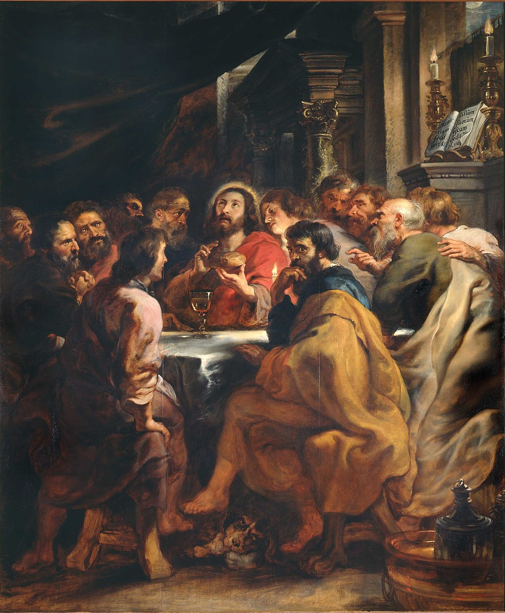

<head>
<meta charset="UTF-8" />
<meta name="keywords" content="drawing, painting" />
<meta name="description" content="drawings by Sunjy" />
<title>Sunjy</title>
<link rel="shortcut icon" type="image/x-icon" href="../../mImages/mCommon/favicon.ico" media="screen" />
<link rel="stylesheet" type="text/css" href="../../mCsses/mCommon/mCssA.css" />
<link rel="stylesheet" type="text/css" href="../../mCsses/mCommon/mCssB.css" />
<link rel="stylesheet" type="text/css" href="../../mCsses/mCommon/mCssC.css" />
<link rel="stylesheet" type="text/css" href="../../mCsses/mCommon/mCssD.css" />
<link rel="stylesheet" type="text/css" href="../../mCsses/mContent/mCssA.css" />
<link rel="stylesheet" type="text/css" href="../../mCsses/mContent/mCssB.css" />
<link rel="stylesheet" type="text/css" href="../../mCsses/mContent/mCssC.css" />
<link rel="stylesheet" type="text/css" href="../../mCsses/mContent/mCssD.css" />
</head>
<script type="text/javascript" src="../../mScripts/mContent/mContentAA.js" /></script>
<script type="text/javascript" src="../../mScripts/mContent/mContentAB.js" /></script>
<script type="text/javascript" src="../../mScripts/mContent/mContentAC.js" /></script>
<script type="text/javascript" src="../../mScripts/mContent/mContentAD.js" /></script>
<script type="text/javascript"></script> 
<script type="text/javascript">
document.write('<div class="mImgAbsolute"></div>');
/*
document.write('<p class="mFontSizeBColor" />From a white paper...</p>');
document.write('<table class="center"><tr><td>');
document.write('');
document.write('</td></tr></table>');
*/
</script>


<script type="text/javascript">
document.write('<p class="mFontSizeBColor" />The Last Supper</p>');
document.write('<p class="mFontSizeSColor" />“The Last Supper” by Peter Paul Rubens depicts Jesus and the Apostles during the Last Supper, with Judas facing towards the viewer and away from the table.<br><br>Judas is the most prominent figure amongst the disciples. Judas holds his right hand to his mouth with his eyes avoiding direct contact with the other participants, with a nervous expression.<br><br>Jesus is dressed in red and has a yellow halo surrounding his head as he looks upwards. Jesus is located in the center of the painting. There are six disciples on each side.<br><br>Jesus holds a loaf of bread with a cup of wine in front of him. Leonardo da Vinci’s Last Supper fresco influenced Rubens as did his humanist ideals from which he extracts biblical themes.<br><br>The composition was also inspired by Venetian 16th century painting.<br><br>A dog with a bone can be seen at the feet of Judas. Dogs were traditional symbols of loyalty and faith. However, this dog appears to be associated with Judas and seems to represent greed or evil, as the companion of Judas.<br><br>A wealthy daughter commissioned this painting as a memorial for her father. Rubens created it as part of an altarpiece in the Church of St. Rumbold in Mechelen, a city in the province of Antwerp, Flanders, Belgium.<br><br>Rubens used assistants for the less critical parts of this painting, but the handling of the figures’ facial features has the distinct touch of the master’s hand.<br><br>The Brera Art Gallery acquired the picture as part of an exchange with the Musee du Louvre in 1813.<br><br>Last Supper<br><br>The Last Supper is the final meal that Jesus shared with his Apostles in Jerusalem before his crucifixion.<br><br>The four Gospels all state that the Last Supper took place towards the end of the week, after Jesus’s triumphal entry into Jerusalem and that Jesus and his Apostles shared a meal shortly before Jesus was crucified at the end of that week.<br><br>During the meal, Jesus predicts his betrayal by one of the Apostles present.<br><br>When evening came, Jesus was reclining at the table with the Twelve.<br>And while they were eating, he said,<br>“Truly I tell you, one of you will betray me.”<br>They were very sad and began to say to him one after the other,<br>“Surely you don’t mean me, Lord?”<br><br>Scholars have looked to the Last Supper as the source of early Christian Eucharist traditions. Others see the account of the Last Supper as derived from 1st-century eucharistic practice, as described by Paul in the mid-50 AD.<br><br>Early Christianity observed a ritual meal known as the “agape feast” which were a full meal, with each participant bringing food, and with the meal eaten in a shared room. They were held on Sundays, which became known as the Lord’s Day.<br><br>The ritual was used to recall the resurrection, the appearance of Christ to the disciples on the road to Emmaus, the presentation to Thomas, and the Pentecost, which all took place on Sundays after the Passion.<br><br>Last Supper in Art<br><br>The Last Supper has been a popular subject in Christian art and dates back to early Christianity and can be seen in the Catacombs of Rome.<br><br>There are three major themes in the depictions of the Last Supper. The first is the dramatic depiction of Jesus’s announcement of his betrayal.<br><br>The second is the institution of the tradition of the Eucharist, in which Jesus gives his disciples bread and wine during the Passover meal.<br><br>The third theme is the farewell of Jesus to his disciples, in which Judas is no longer present, having left the supper.<br></p>');
document.write('<table class="center" /><tr><td>');
document.write('<br>Judas is the most prominent figure amongst the disciples. Judas holds his right hand to his mouth with his eyes avoiding direct contact with the other participants, with a nervous expression.<br><br>Jesus is dressed in red and has a yellow halo surrounding his head as he looks upwards. Jesus is located in the center of the painting. There are six disciples on each side.<br><br>Jesus holds a loaf of bread with a cup of wine in front of him. Leonardo da Vinci’s Last Supper fresco influenced Rubens as did his humanist ideals from which he extracts biblical themes.<br><br>The composition was also inspired by Venetian 16th century painting.<br><br>A dog with a bone can be seen at the feet of Judas. Dogs were traditional symbols of loyalty and faith. However, this dog appears to be associated with Judas and seems to represent greed or evil, as the companion of Judas.<br><br>A wealthy daughter commissioned this painting as a memorial for her father. Rubens created it as part of an altarpiece in the Church of St. Rumbold in Mechelen, a city in the province of Antwerp, Flanders, Belgium.<br><br>Rubens used assistants for the less critical parts of this painting, but the handling of the figures’ facial features has the distinct touch of the master’s hand.<br><br>The Brera Art Gallery acquired the picture as part of an exchange with the Musee du Louvre in 1813.<br><br>Last Supper<br><br>The Last Supper is the final meal that Jesus shared with his Apostles in Jerusalem before his crucifixion.<br><br>The four Gospels all state that the Last Supper took place towards the end of the week, after Jesus’s triumphal entry into Jerusalem and that Jesus and his Apostles shared a meal shortly before Jesus was crucified at the end of that week.<br><br>During the meal, Jesus predicts his betrayal by one of the Apostles present.<br><br>When evening came, Jesus was reclining at the table with the Twelve.<br>And while they were eating, he said,<br>“Truly I tell you, one of you will betray me.”<br>They were very sad and began to say to him one after the other,<br>“Surely you don’t mean me, Lord?”<br><br>Scholars have looked to the Last Supper as the source of early Christian Eucharist traditions. Others see the account of the Last Supper as derived from 1st-century eucharistic practice, as described by Paul in the mid-50 AD.<br><br>Early Christianity observed a ritual meal known as the “agape feast” which were a full meal, with each participant bringing food, and with the meal eaten in a shared room. They were held on Sundays, which became known as the Lord’s Day.<br><br>The ritual was used to recall the resurrection, the appearance of Christ to the disciples on the road to Emmaus, the presentation to Thomas, and the Pentecost, which all took place on Sundays after the Passion.<br><br>Last Supper in Art<br><br>The Last Supper has been a popular subject in Christian art and dates back to early Christianity and can be seen in the Catacombs of Rome.<br><br>There are three major themes in the depictions of the Last Supper. The first is the dramatic depiction of Jesus’s announcement of his betrayal.<br><br>The second is the institution of the tradition of the Eucharist, in which Jesus gives his disciples bread and wine during the Passover meal.<br><br>The third theme is the farewell of Jesus to his disciples, in which Judas is no longer present, having left the supper.<br>" />');
document.write('</td></tr></table>');
</script>


